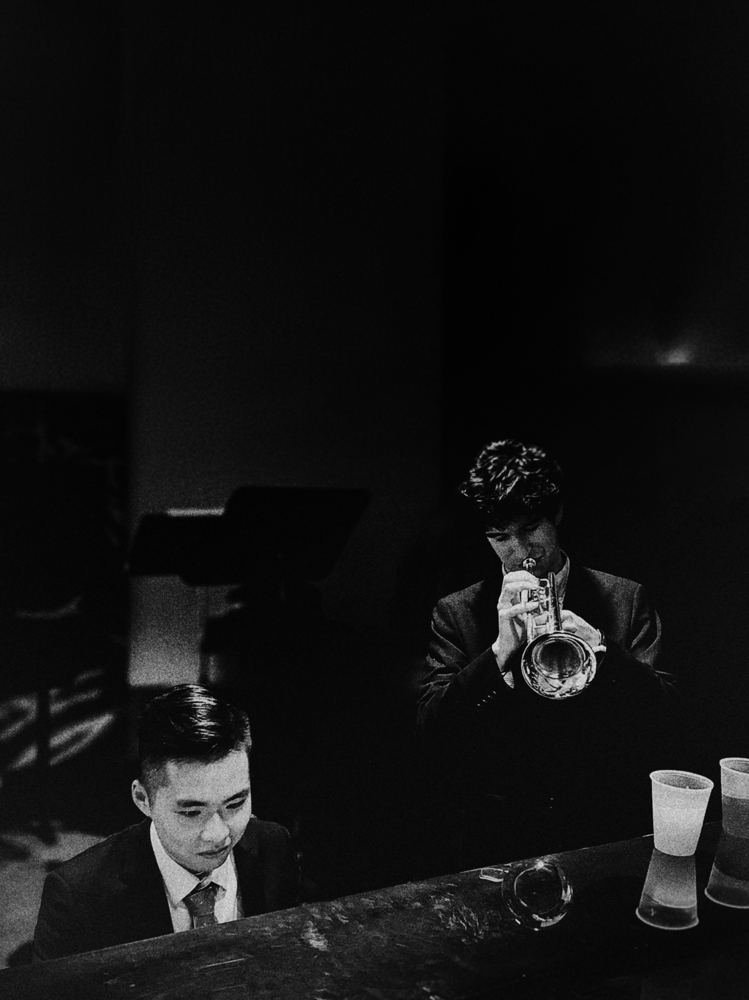

Sound
Extrapolation
The altered dominant ego.
I started playing the keyboard 20 years ago, mostly focused on classical and folk music. For sometime in my teenage years I lacked the motivation to make more noises - until I found jazz.
I have played for the jazz orchestras in my college and my graduate school, but there is still a long way to go. Most recently, I worked as the piano accompanist for the CMU JIVE jazz choir for 3 years.
This page is under construction.
Please visit
my Wix page.